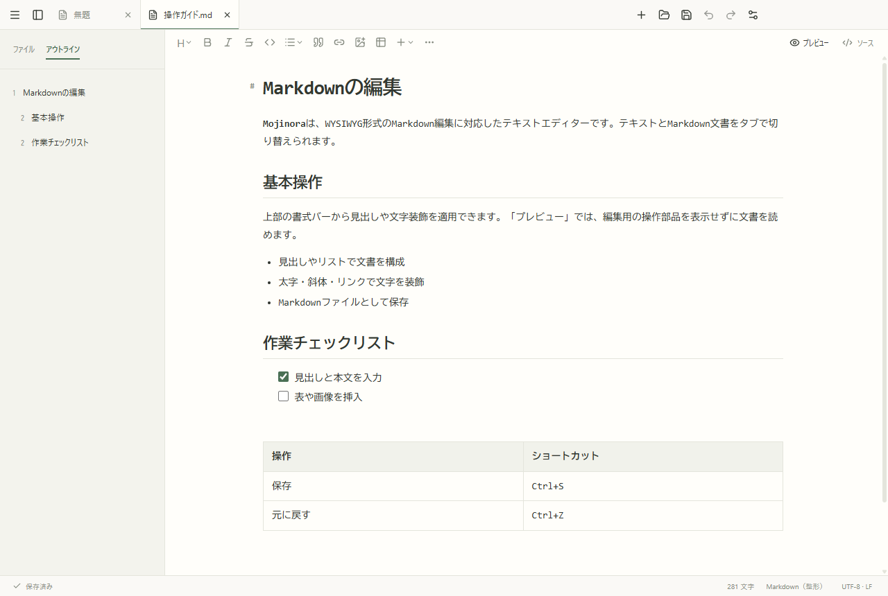

01 / MARKDOWN
整形編集とソース編集
表示を確認しながら編集するモードと、Markdown記法を直接編集するモードを切り替えられます。文字選択時には書式ツールバーを表示し、読み取り専用プレビューも利用できます。
TEXT & MARKDOWN v1.0.0
通常テキストとMarkdownを同じアプリで編集できます。Markdownは、書式を確認しながら編集するWYSIWYG表示とソース表示を切り替えられます。
v1.0.0 · Windows 11 / x64 · 111.7 MiB
個人・商用とも無料

FEATURES
テキストファイルとMarkdown文書の編集に対応しています。
表示を確認しながら編集するモードと、Markdown記法を直接編集するモードを切り替えられます。文字選択時には書式ツールバーを表示し、読み取り専用プレビューも利用できます。
構文の色分け、折りたたみ、矩形選択、複数カーソル、行操作、ブックマークに対応。正規表現による検索・置換と、バックアップ付きのフォルダー内置換を利用できます。
UTF-8、UTF-16、CP932、EUC-JP、ISO-2022-JPに対応。操作マクロ、左右分割、ファイル比較を利用できます。50MiBを超えるファイルは読み取り専用で開き、1GiB超のログも部分表示と追記監視で閲覧できます。
DOWNLOAD
個人・商用とも無料
Windows 11 · x64 · 111.7 MiB
配布者: Mojinora · 手動更新
開発環境の準備や管理者権限は不要です。
対応環境を確認し、Windows用のインストーラーを保存します。
インストーラーを起動し、表示言語、利用条件と配置先を確認します。ショートカット、右クリック項目、ファイルの関連付けを選択できます。
スタートメニューからMojinoraを起動し、既存の文書を開くか新規作成します。